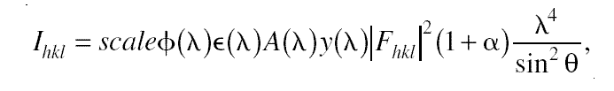

The integrated intensity I of a particular reflection measured in a TOF neutron diffraction experiment can be written as a function of the wavelength and the Bragg angle:
where h, k, l are the Miller indices designating the Bragg peaks, and the wavelength dependent correction factors are in the order given above: the incident
| Parameter | Description | Command Option |
| parameter file | in this file are given: reciprocal unit vectors, normalisation, absorption, sample position, etc (see below) | -P |
| structure factor file | each line contains: h k l Fhkl2
(see below) |
-S |
| d-spacing distribution |
options 1: Lorentzian, 2: Gaussian distributions, functions
describing the d-spacing probability distribution with maximum at the nominal value (for the exact nominal value ideal reflectivity = 1., see also normalisation) |
-o |
|
d-spacing spread |
gives FWHM/d-spacing, the relative 'thickness' of the Ewald
sphere i.e. a small variation of the lattice constant which is same in each
direction, silicon ~ 0.0001=0.01% |
-d |
| reciprocal unit vectors A, B, C [1/A] |
x,y,z components of the reciprocal unit vectors
A, B, C defined in the sample frame |
parameter file |
| normalisation [arb.u.] |
normalisation factor containing for example the
number density |
parameter file |
| absorption [1/cm/A] |
attenuation due to absorption within the sample
per wavelength |
parameter file |
| position X,Y,Z [cm] |
coordinates of the sample centre |
parameter file |
| phi(Z), chi(X), omega(again Z) [deg] |
rotation angles of sample i.e. the reciprocal unit
vectors around the Z, X and again Z axes |
parameter file |
| sample geometry |
sample shape options: 'cub', 'cyl'inder (vertical),
'ball' |
parameter file |
| thickness or diameter, height, width [cm] |
rectangular sample dimensions in x,y,z directions
(sample frame) |
parameter file |
| output angle horizontal, vertical [deg] |
a frame rotation about the
Z axis and then a rotation about the (new)Y axis defines a new orientation
for the neutrons written to the output |
parameter file |
Last modified: Wed Apr 2 18:53:44
MEST 2003, G. Zs.